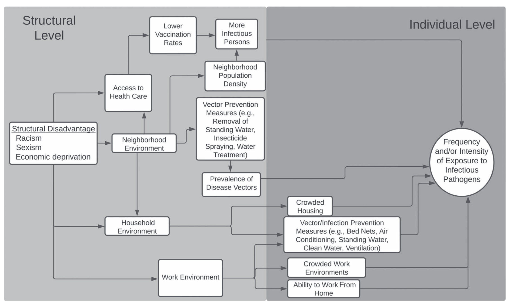
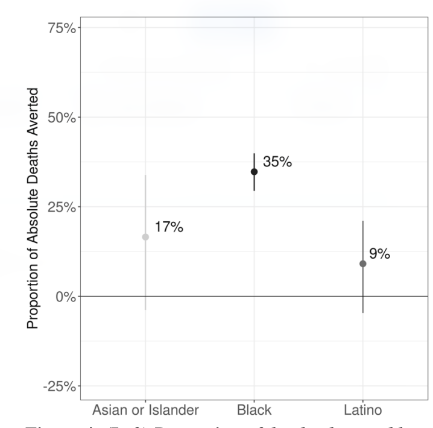

From Ideas to Action on Modeling for Equity
Making equity a first-class concern of epidemiological model(er)s.
CDC U01 Site Visit
Jon Zelner
jzelner@umich.edu
Dept. of Epidemiology
Center for Social Epidemiology and Population Health
University of Michigan School of Public Health
EpiBayes Research Group
epibayes.io


Agenda
Introductions
What does it mean to model for equity?
Lunch ü•™
Short talks/discussion on respiratory infection equity work
We have made good progress on conceptualizing and analyzing infection (in)equity
“Racial disparities in COVID-19 mortality are driven by unequal infection risks.” (CID, 2021)
“There are no equal opportunity infectors” (PLOS Comp. Bio, 2022)
“Modeling rates of disease with missing categorical data.” (Annals of Applied Statistics, Forthcoming)
Modeling for equity: A three-legged stool
Ask questions that foreground macro-structural mechanisms and power differentials.
Collect data that are up to the task of answering these question.
Construct models that examine potential impacts of socio-structural change on disease even if these changes don’t correspond to a formal policy or intervention.
Equity-oriented models take social mechanisms as seriously as biological ones.
COVID-19 disparities are not the fault of those who are experiencing them, but rather reflect social policies and systems that create health disparities in good times and inflate them in a crisis. The US must develop a new kind of “herd immunity,” whereby resistance to the spread of poor health in the population occurs when a sufficiently high proportion of individuals, across all racial, ethnic, and social class groups, are protected from and thus “immune” to negative social determinants.
From Williams & Cooper, “COVID-19 and Health Equity—A New Kind of “Herd Immunity”, JAMA, 6/23/2020
Equity-oriented models require an informed understanding of the connections between high-level, intermediary, and proximal causes of infection.
Flow diagram of connections between high-level, structural causes, intervening mechanisms, and downstream exposure risks, from Noppert, Hegde, and Kubale (2022)
Equity-oriented models cannot treat race and other social categorizations as causal variables.

Theoretical diagram from Phelan and Link (2015) showing the complex relationship between racism, socioeconomic inequity and racial inequity in disease outcomes.
Equity-oriented models must use comparisons that reflect the impact of structural changes on disease risk.
Proportion of SARS-CoV-2 deaths potentially averted in 2020 if all Michiganders experienced the same pacing of SARS-CoV-2 infection as Whites (From Naraharisetti et al., Under Review)
Next step is to translate these ideas into useful models
Some goal-setting questions can be found in this google doc. Specifically:
What do you see as key conceptual challenges in going from theory to useful models of infection inequity?
What are the data gaps that need to be closed? How close-able are they?
What are some of the organizational or institutional impediments to making necessary change?
There be dragons üêâ
Models that encode biased assumptions may be worse than those that ignore equity altogether.
Nonexistent data on individual socioeconomic status in most public health surveillance data.
Datasets are plagued by missingness of key socio-demographic covariates. (Trangucci, Chen, and Zelner 2022)
Career/funding incentives have not been well-aligned.
Modelers from marginalized backgrounds remain underrepresented.
Next
- 1-2ish: Lunch
- 2-4: Covid excess mortality and vaccination patterns (Krzysztof, Kelly & Reiden)
- 4-5: Decedent Viral Testing (Andrew Brouwer)